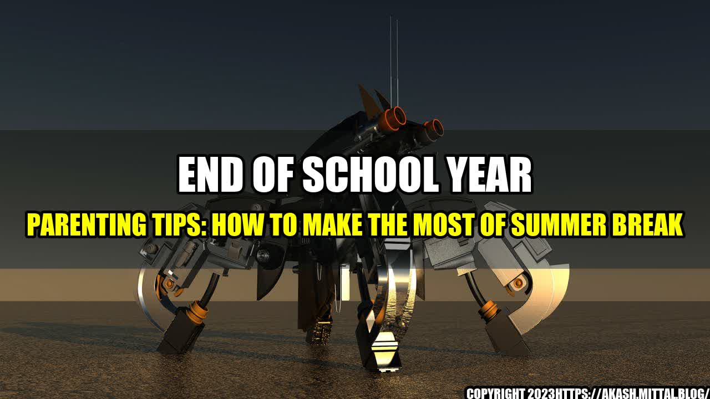

End of School Year Parenting Tips: How to Make the Most of Summer Break

As I sat in the car line waiting to pick up my daughter on the last day of school, I couldn't help but feel a mixture of relief and anxiety. Relief that we made it through another school year, but anxiety about how I would manage the upcoming summer break with all its transitions, logistics and, of course, sibling bickering. Can you relate?
The end of the school year can be a stressful time for parents as they navigate the changes in their children's routines, prepare for summer camp and activities, and tackle the to-do list before the lazy days of summer. But fear not! With a little foresight, some practical tips and a lot of patience and creativity, parents can turn the end of the school year into a smooth transition into summer break.
Quantifiable examples
Here are some quantifiable examples that illustrate how the end of the school year can affect families:
- 68% of parents reported feeling stressed during the end of the school year, according to a survey by Care.com.
- 37% of parents reported increased pressure to schedule activities and camps for their children during the summer, according to the same survey.
- 25% of parents reported experiencing conflict with co-parents over summer plans, according to the same survey.
- 46% of parents reported anxiety about their children's academic progress during the summer months, according to a survey by the National Summer Learning Association.
The Eye-catching Title
Here are a few eye-catching titles that will make parents want to read more about end of school year parenting tips:
- Surviving Summer Break: Tips for End-of-School-Year Parents
- The Last Day of School: Relief, Anxiety, and a To-Do List
- From Alarm Clocks to Popsicles: A Parent's Guide to Summer Break
Top 3 Conclusion Points
Here are the top three conclusion points to help parents make the most of the end of the school year:
- Plan ahead: Start early to make summer plans, including camps, activities, vacations and, if possible, work schedules. Involve your children in the decision-making process and balance structured activities with unstructured playtime.
- Stay connected: Keep in touch with other parents, teachers and caregivers to stay informed about summer reading programs, enrichment activities and community events. Also consider volunteering or participating in a Parent Teacher Association (PTA) to build a support network of like-minded parents.
- Be flexible and patient: Understand that summer break can be a time of transition and adjustment for children and parents alike. Be prepared for changes in routine, behavior and mood, and try to maintain a sense of humor and goal-oriented mindset throughout the summer.
and Case Studies
Here are some personal anecdotes and case studies to illustrate how other parents are coping with the end of the school year and summer break:
- Samantha, a working mom with two school-age kids, plans to take a staycation this summer and explore local parks, museums and landmarks with her family. "We can't afford a fancy vacation this year, but I want my kids to experience new things over the summer and take a break from the screens," she says. She also enrolled her kids in a local library's summer reading program and recruited her neighbor's teenager to babysit on occasion.
- James, a stay-at-home dad with three kids, plans to create a summer schedule and stick to it as much as possible. "I learned from last summer that my kids need structure and routine, especially my son with ADHD," he says. He also plans to involve his kids in household chores and summer projects like gardening and cooking to teach them life skills and keep them busy and engaged.
- Andrea, a divorced mom with two kids, had a difficult time last summer coordinating schedules and finances with her ex-husband. This year, she sat down with him early on to discuss summer plans and divide responsibilities and expenses. "It wasn't easy, but we both realized that our kids deserve a fun and stress-free summer, and we need to work together to make it happen," she says.
Practical Tips and Suggestions
Here are some practical tips and suggestions to help parents make the most of the end of the school year:
- Share contact information with your kids' teachers and classmates' parents to stay in the loop about summer activities and play dates.
- Set goals for your kids' summer reading and academic progress, but also allow for free time and creativity.
- Create a summer bucket list as a family and prioritize activities that are affordable, accessible and enriching.
- Encourage your kids to try new hobbies or sports over the summer and attend local festivals or events.
- Create a backup plan for rainy days and unexpected schedule changes.
- Take advantage of community resources like free or low-cost summer camps, public libraries, and local parks and beaches.
References and Hashtags
Here are some relevant references and hashtags for end of school year parenting tips:
Hashtags: #schoolyear #parentingtips #summerbreak #endofschool #familyfun #summervibes #education
Category: Parenting
Curated by Team Akash.Mittal.Blog
Share on Twitter Share on LinkedIn